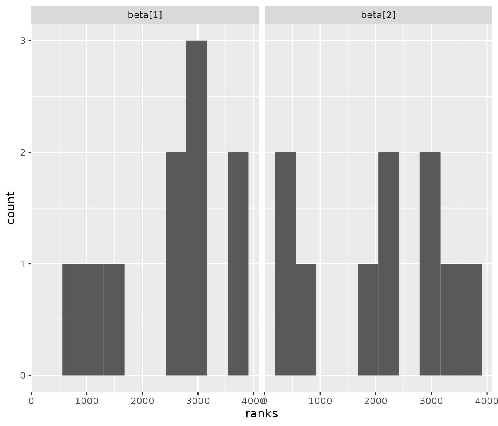

Background
The introductory vignette vignette caters to Bayesian data analysis workflows with few datasets to analyze. However, it is sometimes desirable to run one or more Bayesian models repeatedly across multiple simulated datasets. Examples:
- Validate the implementation of a Bayesian model using simulation.
- Simulate a randomized controlled experiment to explore frequentist properties such as power and Type I error.
This vignette focuses on (1).
Example project
Visit https://github.com/wlandau/stantargets-example-validation for an example project based on this vignette. The example has an RStudio Cloud workspace which allows you to run the project in a web browser.
Interval-based model validation pipeline
This particular example uses the concept of calibration that Bob Carpenter explains here (Carpenter 2017). The goal is to simulate multiple datasets from the model below, analyze each dataset, and assess how often the estimated posterior intervals cover the true parameters from the prior predictive simulations. If coverage is no systematically different from nominal, this is evidence that the model was implemented correctly. The quantile method by Cook, Gelman, and Rubin (2006) generalizes this concept, and simulation-based calibration (Talts et al. 2020) generalizes further. The interval-based technique featured in this vignette is not as robust as SBC, but it may be more expedient for large models because it does not require visual inspection of multiple histograms. See a later section in this vignette for an example of simulation-based calibration on this same model.
lines <- "data {
int <lower = 1> n;
vector[n] x;
vector[n] y;
}
parameters {
vector[2] beta;
}
model {
y ~ normal(beta[1] + x * beta[2], 1);
beta ~ normal(0, 1);
}"
writeLines(lines, "model.stan")Next, we define a pipeline to simulate multiple datasets and fit each dataset with the model. In our data-generating function, we put the true parameter values of each simulation in a special .join_data list. stantargets will automatically join the elements of .join_data to the correspondingly named variables in the summary output. This will make it super easy to check how often our posterior intervals capture the truth. As for scale, generate 10 datasets (5 batches with 2 replications each) and run the model on each of the 10 datasets.1 By default, each of the 10 model runs computes 4 MCMC chains with 2000 MCMC iterations each (including burn-in) and you can adjust with the chains, iter_sampling, and iter_warmup arguments of tar_stan_mcmc_rep_summary().
# _targets.R
library(targets)
library(stantargets)
options(crayon.enabled = FALSE)
# Use computer memory more sparingly:
tar_option_set(memory = "transient", garbage_collection = TRUE)
simulate_data <- function(n = 10L) {
beta <- rnorm(n = 2, mean = 0, sd = 1)
x <- seq(from = -1, to = 1, length.out = n)
y <- rnorm(n, beta[1] + x * beta[2], 1)
list(
n = n,
x = x,
y = y,
.join_data = list(beta = beta)
)
}
list(
tar_stan_mcmc_rep_summary(
model,
"model.stan",
simulate_data(), # Runs once per rep.
batches = 5, # Number of branch targets.
reps = 2, # Number of model reps per branch target.
variables = "beta",
summaries = list(
~posterior::quantile2(.x, probs = c(0.025, 0.975))
),
stdout = R.utils::nullfile(),
stderr = R.utils::nullfile()
)
)We now have a pipeline that runs the model 10 times: 5 batches (branch targets) with 2 replications per batch.
tar_visnetwork()
#> Warning message:
#> package ‘targets’ was built under R version 4.3.3
#> Run the computation with tar_make()
tar_make()
#> ▶ dispatched target model_batch
#> ● completed target model_batch [0.001 seconds]
#> ▶ dispatched target model_file_model
#> ● completed target model_file_model [15.867 seconds]
#> ▶ dispatched branch model_data_b0b9380a
#> ● completed branch model_data_b0b9380a [0.008 seconds]
#> ▶ dispatched branch model_data_ffcdb73c
#> ● completed branch model_data_ffcdb73c [0.003 seconds]
#> ▶ dispatched branch model_data_b968a03a
#> ● completed branch model_data_b968a03a [0.003 seconds]
#> ▶ dispatched branch model_data_f8763cb2
#> ● completed branch model_data_f8763cb2 [0.003 seconds]
#> ▶ dispatched branch model_data_0bfdabdc
#> ● completed branch model_data_0bfdabdc [0.003 seconds]
#> ● completed pattern model_data
#> ▶ dispatched branch model_model_5d061b58
#> ● completed branch model_model_5d061b58 [1.536 seconds]
#> ▶ dispatched branch model_model_a9336683
#> ● completed branch model_model_a9336683 [1.318 seconds]
#> ▶ dispatched branch model_model_bde6a6d6
#> ● completed branch model_model_bde6a6d6 [1.323 seconds]
#> ▶ dispatched branch model_model_384f982f
#> ● completed branch model_model_384f982f [1.323 seconds]
#> ▶ dispatched branch model_model_0d59666a
#> ● completed branch model_model_0d59666a [1.321 seconds]
#> ● completed pattern model_model
#> ▶ dispatched target model
#> ● completed target model [0 seconds]
#> ▶ ended pipeline [24.006 seconds]
#> Warning message:
#> package ‘targets’ was built under R version 4.3.3
#> The result is an aggregated data frame of summary statistics, where the .rep column distinguishes among individual replicates. We have the posterior intervals for beta in columns q2.5 and q97.5. And thanks to .join_data in simulate_data(), there is a special .join_data column in the output to indicate the true value of each parameter from the simulation.
tar_load(model)
model
#> # A tibble: 20 × 9
#> variable q2.5 q97.5 .join_data .rep .dataset_id .seed .file .name
#> <chr> <dbl> <dbl> <dbl> <chr> <chr> <int> <chr> <chr>
#> 1 beta[1] 0.0318 1.24 0.751 99bfcc99 model_data_b… 1.49e9 mode… model
#> 2 beta[2] -1.04 0.734 -0.592 99bfcc99 model_data_b… 1.49e9 mode… model
#> 3 beta[1] 0.472 1.63 1.19 051ce394 model_data_b… 2.04e9 mode… model
#> 4 beta[2] -0.844 0.911 0.0635 051ce394 model_data_b… 2.04e9 mode… model
#> 5 beta[1] 1.35 2.52 2.15 4258cff2 model_data_f… 4.83e8 mode… model
#> 6 beta[2] -1.94 -0.152 -1.71 4258cff2 model_data_f… 4.83e8 mode… model
#> 7 beta[1] -0.230 0.946 0.271 96e3f8e9 model_data_f… 6.64e8 mode… model
#> 8 beta[2] -1.73 0.0476 -0.407 96e3f8e9 model_data_f… 6.64e8 mode… model
#> 9 beta[1] 0.348 1.51 0.758 9e8ac8fd model_data_b… 1.33e9 mode… model
#> 10 beta[2] -0.794 0.962 0.426 9e8ac8fd model_data_b… 1.33e9 mode… model
#> 11 beta[1] -0.864 0.322 -0.541 289ec442 model_data_b… 8.94e8 mode… model
#> 12 beta[2] -1.24 0.500 -0.251 289ec442 model_data_b… 8.94e8 mode… model
#> 13 beta[1] -0.194 0.998 0.618 7b68a6d3 model_data_f… 3.71e7 mode… model
#> 14 beta[2] -0.551 1.17 -0.245 7b68a6d3 model_data_f… 3.71e7 mode… model
#> 15 beta[1] -0.913 0.254 -0.160 fb1ab4a4 model_data_f… 1.33e9 mode… model
#> 16 beta[2] -2.52 -0.751 -1.07 fb1ab4a4 model_data_f… 1.33e9 mode… model
#> 17 beta[1] -2.79 -1.63 -1.81 7640ef0e model_data_0… 5.73e8 mode… model
#> 18 beta[2] -2.44 -0.673 -1.22 7640ef0e model_data_0… 5.73e8 mode… model
#> 19 beta[1] 0.483 1.64 1.43 c9c1f653 model_data_0… 1.83e9 mode… model
#> 20 beta[2] -1.98 -0.294 -1.19 c9c1f653 model_data_0… 1.83e9 mode… modelNow, let’s assess how often the estimated 95% posterior intervals capture the true values of beta. If the model is implemented correctly, the coverage value below should be close to 95%. (Ordinarily, we would increase the number of batches and reps per batch and run batches in parallel computing.)
library(dplyr)
model %>%
group_by(variable) %>%
summarize(coverage = mean(q2.5 < .join_data & .join_data < q97.5))
#> # A tibble: 2 × 2
#> variable coverage
#> <chr> <dbl>
#> 1 beta[1] 1
#> 2 beta[2] 1For maximum reproducibility, we should express the coverage assessment as a custom function and a target in the pipeline.
# _targets.R
library(targets)
library(stantargets)
simulate_data <- function(n = 10L) {
beta <- rnorm(n = 2, mean = 0, sd = 1)
x <- seq(from = -1, to = 1, length.out = n)
y <- rnorm(n, beta[1] + x * beta[2], 1)
list(
n = n,
x = x,
y = y,
.join_data = list(beta = beta)
)
}
list(
tar_stan_mcmc_rep_summary(
model,
"model.stan",
simulate_data(),
batches = 5, # Number of branch targets.
reps = 2, # Number of model reps per branch target.
variables = "beta",
summaries = list(
~posterior::quantile2(.x, probs = c(0.025, 0.975))
),
stdout = R.utils::nullfile(),
stderr = R.utils::nullfile()
),
tar_target(
coverage,
model %>%
group_by(variable) %>%
summarize(coverage = mean(q2.5 < .join_data & .join_data < q97.5))
)
)The new coverage target should the only outdated target, and it should be connected to the upstream model target.
tar_visnetwork()
#> Warning message:
#> package ‘targets’ was built under R version 4.3.3
#> When we run the pipeline, only the coverage assessment should run. That way, we skip all the expensive computation of simulating datasets and running MCMC multiple times.
tar_make()
#> ✔ skipped target model_batch
#> ✔ skipped target model_file_model
#> ✔ skipped branch model_data_b0b9380a
#> ✔ skipped branch model_data_ffcdb73c
#> ✔ skipped branch model_data_b968a03a
#> ✔ skipped branch model_data_f8763cb2
#> ✔ skipped branch model_data_0bfdabdc
#> ✔ skipped pattern model_data
#> ✔ skipped branch model_model_5d061b58
#> ✔ skipped branch model_model_a9336683
#> ✔ skipped branch model_model_bde6a6d6
#> ✔ skipped branch model_model_384f982f
#> ✔ skipped branch model_model_0d59666a
#> ✔ skipped pattern model_model
#> ✔ skipped target model
#> ▶ dispatched target coverage
#> ● completed target coverage [0.011 seconds]
#> ▶ ended pipeline [0.221 seconds]
#> Warning message:
#> package ‘targets’ was built under R version 4.3.3
#>
tar_read(coverage)
#> # A tibble: 2 × 2
#> variable coverage
#> <chr> <dbl>
#> 1 beta[1] 1
#> 2 beta[2] 1Multiple models
tar_stan_rep_mcmc_summary() and similar functions allow you to supply multiple Stan models. If you do, each model will share the the same collection of datasets, and the .dataset_id column of the model target output allows for custom analyses that compare different models against each other. Suppose we have a new model, model2.stan.
lines <- "data {
int <lower = 1> n;
vector[n] x;
vector[n] y;
}
parameters {
vector[2] beta;
}
model {
y ~ normal(beta[1] + x * x * beta[2], 1); // Regress on x^2 instead of x.
beta ~ normal(0, 1);
}"
writeLines(lines, "model2.stan")To set up the simulation workflow to run on both models, we add model2.stan to the stan_files argument of tar_stan_rep_mcmc_summary(). And in the coverage summary below, we group by .name to compute a coverage statistic for each model.
# _targets.R
library(targets)
library(stantargets)
simulate_data <- function(n = 10L) {
beta <- rnorm(n = 2, mean = 0, sd = 1)
x <- seq(from = -1, to = 1, length.out = n)
y <- rnorm(n, beta[1] + x * beta[2], 1)
list(
n = n,
x = x,
y = y,
.join_data = list(beta = beta)
)
}
list(
tar_stan_mcmc_rep_summary(
model,
c("model.stan", "model2.stan"), # another model
simulate_data(),
batches = 5,
reps = 2,
variables = "beta",
summaries = list(
~posterior::quantile2(.x, probs = c(0.025, 0.975))
),
stdout = R.utils::nullfile(),
stderr = R.utils::nullfile()
),
tar_target(
coverage,
model %>%
group_by(.name, variable) %>%
summarize(coverage = mean(q2.5 < .join_data & .join_data < q97.5))
)
)In the graph below, notice how targets model_model and model_model2 are both connected to model_data upstream. Downstream, model is equivalent to dplyr::bind_rows(model_model, model_model2), and it will have special columns .name and .file to distinguish among all the models.
tar_visnetwork()
#> Warning message:
#> package ‘targets’ was built under R version 4.3.3
#> Simulation-based calibration
This section explores a more rigorous validation study which adopts the proper simulation-based calibration (SBC) method from (Talts et al. 2020). To use this method, we need a function that generates rank statistics from a simulated dataset and a data frame of posterior draws. If the model is implemented correctly, these rank statistics will be uniformly distributed for each model parameter. Our function will use the calculate_ranks_draws_matrix() function from the SBC R package (Kim et al. 2022).
get_ranks <- function(data, draws) {
draws <- select(draws, starts_with(names(data$.join_data)))
truth <- map_dbl(
names(draws),
~eval(parse(text = .x), envir = data$.join_data)
)
out <- SBC::calculate_ranks_draws_matrix(truth, as_draws_matrix(draws))
as_tibble(as.list(out))
}To demonstrate this function, we simulate a dataset,
simulate_data <- function(n = 10L) {
beta <- rnorm(n = 2, mean = 0, sd = 1)
x <- seq(from = -1, to = 1, length.out = n)
y <- rnorm(n, beta[1] + x * beta[2], 1)
list(
n = n,
x = x,
y = y,
.join_data = list(beta = beta)
)
}
data <- simulate_data()
str(data)
#> List of 4
#> $ n : int 10
#> $ x : num [1:10] -1 -0.778 -0.556 -0.333 -0.111 ...
#> $ y : num [1:10] -3.007 0.793 -1.739 -2.91 -1.616 ...
#> $ .join_data:List of 1
#> ..$ beta: num [1:2] -2.144 -0.301we make up a hypothetical set of posterior draws,
draws <- tibble(`beta[1]` = rnorm(100), `beta[2]` = rnorm(100))
draws
#> # A tibble: 100 × 2
#> `beta[1]` `beta[2]`
#> <dbl> <dbl>
#> 1 1.57 -0.658
#> 2 -0.610 0.0874
#> 3 1.05 0.0142
#> 4 1.20 -0.257
#> 5 -2.25 -0.583
#> 6 0.241 -0.425
#> 7 -1.23 1.31
#> 8 -1.83 0.655
#> 9 -0.703 -0.461
#> 10 0.156 -0.331
#> # ℹ 90 more rowsand we call get_ranks() to get the SBC rank statistics for each model parameter.
library(dplyr)
library(posterior)
library(purrr)
get_ranks(data = data, draws = draws)
#> # A tibble: 1 × 2
#> `beta[1]` `beta[2]`
#> <dbl> <dbl>
#> 1 1 45To put this into practice in a pipeline, we supply the symbol get_ranks to the transform argument of tar_stan_mcmc_rep_draws(). That way, instead of a full set of draws, each replication will return only the output of get_ranks() on those draws (plus a few helper columns). If supplied, the transform argument of tar_stan_mcmc_rep_draws() must be the name of a function in the pipeline. This function must accept arguments data and draws, and it must return a data frame.
# _targets.R
library(targets)
library(stantargets)
tar_option_set(packages = c("dplyr", "posterior", "purrr", "tibble"))
simulate_data <- function(n = 10L) {
beta <- rnorm(n = 2, mean = 0, sd = 1)
x <- seq(from = -1, to = 1, length.out = n)
y <- rnorm(n, beta[1] + x * beta[2], 1)
list(
n = n,
x = x,
y = y,
.join_data = list(beta = beta)
)
}
get_ranks <- function(data, draws) {
draws <- select(draws, starts_with(names(data$.join_data)))
truth <- map_dbl(
names(draws),
~eval(parse(text = .x), envir = data$.join_data)
)
out <- SBC::calculate_ranks_draws_matrix(truth, as_draws_matrix(draws))
as_tibble(as.list(out))
}
list(
tar_stan_mcmc_rep_draws(
model,
c("model.stan"),
simulate_data(),
batches = 5,
reps = 2,
variables = "beta",
stdout = R.utils::nullfile(),
stderr = R.utils::nullfile(),
transform = get_ranks # Supply the transform to get SBC ranks.
)
)Our new function get_ranks() is a dependency of one of our downstream targets, so any changes to get_ranks() will force the results to refresh in the next run of the pipeline.
tar_visnetwork()
#> Warning message:
#> package ‘targets’ was built under R version 4.3.3
#> Let’s run the pipeline to compute a set of rank statistics for each simulated dataset.
tar_make()
#> ✔ skipped target model_batch
#> ✔ skipped target model_file_model
#> ✔ skipped branch model_data_b0b9380a
#> ✔ skipped branch model_data_ffcdb73c
#> ✔ skipped branch model_data_b968a03a
#> ✔ skipped branch model_data_f8763cb2
#> ✔ skipped branch model_data_0bfdabdc
#> ✔ skipped pattern model_data
#> ▶ dispatched branch model_model_5d061b58
#> ● completed branch model_model_5d061b58 [1.644 seconds]
#> ▶ dispatched branch model_model_a9336683
#> ● completed branch model_model_a9336683 [1.334 seconds]
#> ▶ dispatched branch model_model_bde6a6d6
#> ● completed branch model_model_bde6a6d6 [1.33 seconds]
#> ▶ dispatched branch model_model_384f982f
#> ● completed branch model_model_384f982f [1.333 seconds]
#> ▶ dispatched branch model_model_0d59666a
#> ● completed branch model_model_0d59666a [1.343 seconds]
#> ● completed pattern model_model
#> ▶ ended pipeline [7.677 seconds]
#> Warning message:
#> package ‘targets’ was built under R version 4.3.3
#> We have a data frame of rank statistics with one row per simulation rep and one column per model parameter.
tar_load(model_model)
model_model
#> # A tibble: 10 × 7
#> `beta[1]` `beta[2]` .rep .dataset_id .seed .file .name
#> <dbl> <dbl> <chr> <chr> <int> <chr> <chr>
#> 1 2600 658 7c991244 model_data_b0b9380a_1 1490816252 model.st… model
#> 2 2616 2049 e4141b79 model_data_b0b9380a_2 2036930449 model.st… model
#> 3 3098 298 b4f14839 model_data_ffcdb73c_1 483483223 model.st… model
#> 4 1646 3284 2c7051cc model_data_ffcdb73c_2 664499179 model.st… model
#> 5 1122 3083 4d2b0770 model_data_b968a03a_1 1333721666 model.st… model
#> 6 802 2402 d3199d78 model_data_b968a03a_2 894289376 model.st… model
#> 7 3031 442 5768e060 model_data_f8763cb2_1 37052332 model.st… model
#> 8 2831 3572 5589c874 model_data_f8763cb2_2 1333838785 model.st… model
#> 9 3647 3022 a8ccdc62 model_data_0bfdabdc_1 573008143 model.st… model
#> 10 3543 1781 f697a5d6 model_data_0bfdabdc_2 1825978703 model.st… modelIf the model is implemented correctly, then each the rank statistics each model parameter should be uniformly distributed. In practice, you may need thousands of simulation reps to make a judgment.
library(ggplot2)
library(tidyr)
model_model %>%
pivot_longer(
starts_with("beta"),
names_to = "parameter",
values_to = "ranks"
) %>%
ggplot(.) +
geom_histogram(aes(x = ranks), bins = 10) +
facet_wrap(~parameter) +
theme_gray(12)